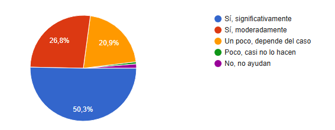
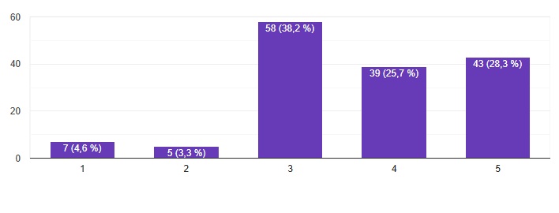
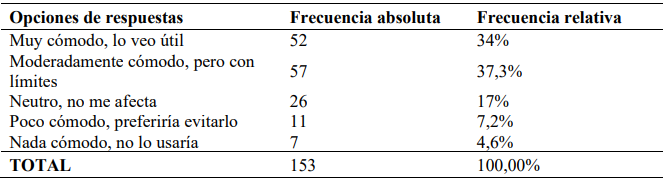

Resultados de la encuesta
¿Crees que los recursos de lectura pueden ayudar a reducir el estrés o mejorar el estado de ánimo?
Análisis: El análisis de los datos muestra que la mayoría de los participantes considera que los recursos de lectura son altamente efectivos para reducir el estrés o mejorar el estado de ánimo, mientras que una cuarta parte (26,8%) opina que su impacto es moderado. Esto significa que casi tres de cada cuatro personas perciben la lectura como una herramienta valiosa para el bienestar emocional. Además, solo una pequeña parte de los encuestados cree que estos recursos tienen poca o ninguna utilidad, lo que refuerza el potencial de la lectura para ser integrada en estrategias de manejo del estrés y bienestar emocional. Estos resultados destacan la aceptación generalizada y la confianza en el poder de la lectura como una intervención efectiva en la mejora del bienestar mental.

¿Actualmente lees libros u otros recursos para mejorar tu bienestar emocional?
Análisis: Los hábitos de lectura actuales muestran que una proporción significativa de personas lee sólo ocasionalmente, principalmente por necesidad, mientras que una pequeña proporción mantiene este hábito todo el tiempo. Sin embargo, todavía hay una gran parte de contenidos que rara vez se leen, lo que indica que la lectura no está integrada de manera consistente en la vida diaria. Es importante destacar el interés potencial de las personas que desean explorar la lectura pero aún no lo han hecho. Por otro lado, un porcentaje menor manifiesta desinterés total, lo que sugiere la necesidad de estrategias específicas para captar su atención o adaptar las propuestas a sus preferencias.
¿Qué tan satisfecho estás con las herramientas actuales para la gestión de emociones, como aplicaciones de meditación o terapia en línea?
Análisis: En cuanto a la satisfacción con las herramientas actuales, como las aplicaciones de meditación o terapia en línea, una parte significativa de los encuestados se mostró neutral, indicando que la experiencia no fue ni positiva ni negativa. Sin embargo, casi la mitad de los encuestados, tanto si están muy como medianamente satisfechos, confirman que estas herramientas son apreciadas y tienen funcionalidades útiles para muchos usuarios. Esta revisión destaca su potencial impacto positivo y las oportunidades para mejorar y diversificar las opciones existentes. Soluciones innovadoras, como los chatbots de lectura personalizados, pueden complementar estas herramientas, proporcionando un enfoque más adaptado a los estados de ánimo individuales y que satisface necesidades no satisfechas.
¿Crees que un chatbot que recomiende lecturas basadas en el estado de ánimo puede contribuir a mejorar el bienestar emocional?
Análisis: La mayoría de los encuestados encontraron útil la idea de un chatbot que recomienda material de lectura según el estado de ánimo, una minoría significativa lo encontró útil en determinadas situaciones y un tercio lo encontró definitivamente útil. Sólo una pequeña proporción pensó que no tenía sentido, lo que indica que el requisito fue ampliamente aceptado. Este interés refleja oportunidades prometedoras para desarrollar herramientas innovadoras que puedan abordar necesidades emocionales específicas, complementar las soluciones actuales y proporcionar un enfoque más personalizado.
¿Qué tan probable es que recomiendes un chatbot de bienestar emocional a otras personas?
Análisis: La mayoría de los participantes tenían una tendencia positiva a recomendar los chatbots y más de la mitad les otorgaban calificaciones altas. Esto demuestra que el concepto del proyecto genera interés y confianza en su potencial. Un número significativo de personas se mantuvo neutral, quizás porque prefieren probar los servicios antes de formarse una opinión final. Este hallazgo resalta la importancia de brindar una experiencia inicial sólida y efectiva para transformar esta neutralidad en recomendaciones proactivas, reforzando así las percepciones positivas de los chatbots.

¿Qué importancia le das a la privacidad y seguridad de tus datos en este tipo de herramientas digitales?
Análisis: La privacidad y la seguridad son cuestiones clave para la mayoría de los encuestados, y muchos las califican como muy o bastante importantes. Los resultados muestran que la confianza en la protección de los datos personales es un factor clave en la aceptación y el uso de los chatbots. Garantizar altos estándares de seguridad y una comunicación transparente sobre cómo se gestiona la información de los usuarios será clave para impulsar la adopción y aumentar la confianza.
¿En qué momentos del día sientes que sería más útil recibir una recomendación de lectura según tu estado emocional?
Análisis: La variación ideal en el momento de recibir recomendaciones resalta la importancia de la personalización en el diseño de chatbot. Aunque los horarios más populares fueron la mañana y la tarde, con una ligera preferencia por la mañana, un número importante de personas prefirió la consulta inmediata en función de su estado emocional. Esto pone de relieve la necesidad de crear herramientas flexibles que puedan adaptarse no sólo a horarios específicos sino también a las necesidades emocionales únicas de cada usuario, aumentando así su practicidad y eficacia.
¿Te sentirías cómodo si el chatbot usara análisis de texto en tus conversaciones para mejorar las recomendaciones de lectura?
Análisis: Si bien una parte importante de los encuestados se sintió cómoda con la idea de que los chatbots utilicen análisis de texto para personalizar las recomendaciones, un número significativo expresó opiniones moderadas o neutrales, lo que sugiere que la adopción de esta función depende de aspectos clave como la privacidad y el consentimiento. tratado. Quienes se sintieron incómodos enfatizaron la necesidad de claridad sobre las políticas de privacidad y el control sobre la información personal. Esta situación demuestra que, si bien los usuarios están deseosos de adoptar tecnologías avanzadas, la confianza en una gestión transparente y segura de los datos es esencial para generar una aceptación más amplia.

¿Preferirías que el chatbot sugiera libros completos, artículos breves o fragmentos de lectura según tu estado emocional?
Análisis: Las preferencias de las personas en cuanto a formatos de lectura varían ampliamente: un número significativo de lectores prefiere leer libros completos, mientras que otros eligen leer artículos breves. Otros se mostraron abiertos a todos los formatos, sugiriendo que los chatbots deben ofrecer una amplia gama de opciones para satisfacer las diversas necesidades de los usuarios. Esta flexibilidad ayudará a atraer diferentes tipos de lectores y maximizar la efectividad de las recomendaciones, además de satisfacer las preferencias personales de cada usuario.

¿Crees que los recursos de lectura pueden ayudar a reducir el estrés o mejorar el estado de ánimo?
Análisis: La mayoría de los encuestados reconoce la lectura como un recurso importante para el bienestar emocional, destacando tanto su valor esencial como su relevancia en un grado más moderado. Este consenso respalda la idea de que el chatbot, centrado en ofrecer recomendaciones personalizadas, puede tener un impacto significativo en la mejora del bienestar de los usuarios. La percepción positiva sobre los beneficios emocionales de la lectura refuerza la relevancia del proyecto y su potencial para ser una herramienta útil en el manejo de las emociones.